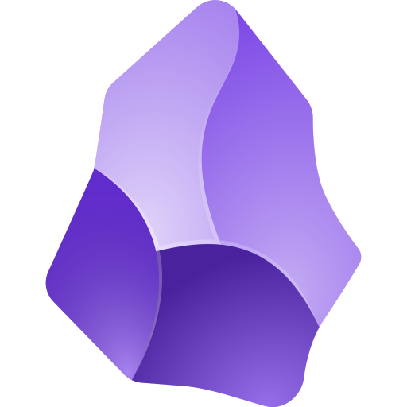
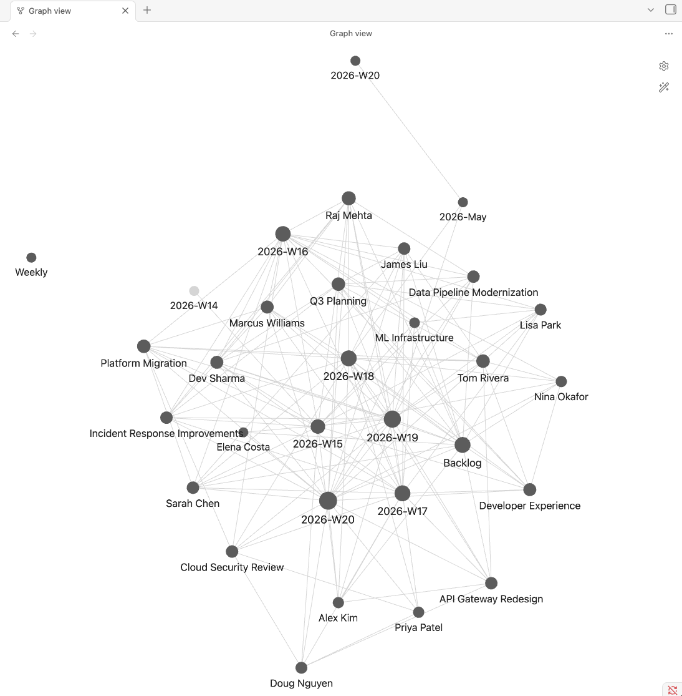

Netflix fork - walkthrough
github.netflix.net/mminutillo/obsidian-worklog
Have your laptop out. There's a clone-and-run-setup section partway through.
/worklogThree pieces that work together:
A markdown file at skills/worklog/SKILL.md. Claude reads it when you type /worklog. That's all it is - prose instructions, ~1500 lines.
An Obsidian vault with 10 directories: Worklogs/, People/, Programs/, Teams/, Meetings/, Sources/, Preferences/, Archive/, Summaries/, Reports/. Plain markdown.
The Netflix fork pins to specific tool IDs from core-tools and plugin_atlassian so Claude knows exactly which MCP to call when it needs Pandora, Jira, Confluence, or Slack data.
Public version: github.com/menottim/obsidian-worklog. This deck covers the Netflix fork on top of it.
If you haven't built one yet, the moving parts are simpler than they sound.
--- skills/worklog/SKILL.md --- --- name: worklog description: > Manage Menotti's personal worklog stored in Obsidian. Use this skill whenever the user says "worklog", "weekly rollover", "what's on my plate", "add to my worklog", "summarize my week", or anything about managing weekly work priorities. --- # How Claude Code uses this file: # 1. User types /worklog (or any keyword in the description above) # 2. Claude reads this entire SKILL.md # 3. Claude follows the prose instructions below as its plan ## Vault path ~/Documents/Obsidian Vault ## Commands ### /worklog rollover Create the new week file from Templates/Weekly.md. Carry forward any items marked ⏳ from the previous week. Move ✅ items to Archive/...
# Your vault layout Your Vault/ Worklogs/ # YYYY-Www.md, one per week + Backlog People/ # One note per person, wiki-linked Programs/ # One note per program/initiative Teams/ # Org structure (Pandora-aware) Meetings/ # Ingested Slack threads + docs Sources/ # Registered Slack channels Preferences/ # Voice, style, workflow rules Archive/ # Completed weeks (compact) Summaries/ # Weekly/monthly/quarterly Reports/ # D3 visualizations (HTML)
git pushgrep
Mentioning [[Jane Smith]] in a worklog creates a backlink to her People note. Obsidian's graph view shows the connections. Useful when you want to find every week she came up.
| Command | What it does | When |
|---|---|---|
/worklog | Show active items by priority | Any time |
/worklog rollover | Start a new week, archive previous, carry forward | Monday |
/worklog review | Walk through each item for status updates | Monday morning |
/worklog add P1 <title> | Quick-add an item, checks for duplicates | Mid-week |
/worklog pull | Ingest unprocessed threads from Slack sources | Mid-week or before review |
/worklog summary [week|month|quarter] | Impact summary for reporting up | End of period |
/worklog audit | Vault health check + stale-note flagging | Friday or monthly |
/worklog viz [period] | D3 charts as standalone HTML | End of month/quarter |
/worklog sync | Git commit + push of the vault | After any update |
Three commands on top of what the public fork has.
/worklog ingestTakes a URL (Coda, Confluence, Google Doc, Slack thread permalink). Fetches the body via the matched MCP, extracts action items, wiki-links people. Used instead of paste-into-chat for individual docs.
/worklog whoisResolves a name against Pandora via the core-tools MCP. Writes title, manager, team into a People/ note. Creates a stub for the manager so the link works.
/worklog jiraPulls a Jira ticket via the Atlassian MCP. Adds the title, status, and assignee to your current week under the right subgroup. Formats the ticket key as a Markdown link.
Each command points at a specific MCP tool ID - e.g. mcp__plugin_atlassian_atlassian__getJiraIssue for the Jira one. Claude doesn't infer which tool to use. When something breaks, the failure has a clear name.
If you just type /worklog <arg>, the skill classifies the argument and routes to the matching command. No need to remember which one.
/worklog https://docs.google.com/document/d/abc... /worklog WISSE-1234 /worklog https://netflix.atlassian.net/browse/SIDE-99 /worklog jane.smith@netflix.com /worklog status /worklog spent 2 hrs reviewing the rollout plan
-> /worklog ingest (Google Doc URL) -> /worklog jira (matches [A-Z]+-\d+) -> /worklog jira (extracted from URL) -> /worklog whois (netflix.com email) -> /worklog status (known subcommand) -> raw worklog input (default)
The skill announces the routing decision before running. Bare names like "Sarah Chen" don't auto-route to whois - too easy to confuse with worklog item text. Email format (firstname.lastname@netflix.com) is the unambiguous signal.
Run through these before we move on. If anything's missing, flag it - we'll wait.
newt on PATH: command -v newtgh authed for github.netflix.net: GH_HOST=github.netflix.net gh auth status@netflix.com git email handyCheckpoint: everything green? Speak up if not.
$ cd ~/workspace # or wherever you keep your repos $ git clone https://github.netflix.net/mminutillo/obsidian-worklog $ cd obsidian-worklog
The public version at github.com/menottim/obsidian-worklog works too, but skips the Netflix-specific commands (/worklog ingest, /worklog whois, /worklog jira) and the MCP profile auto-join. Use the Netflix fork unless you have a reason not to.
Checkpoint: ls shows setup.sh, skills/, docs/, README.md.
$ ./setup.sh === obsidian-worklog setup (strict mode) === Obsidian vault path [~/Documents/Obsidian Vault]: # type or accept default Your display name [yourname]: # your name Git user.name [yourname]: # for vault commits Git user.email []: you@netflix.com === Netflix identity detected === OK newt installed at /usr/local/bin/newt OK genai-core-tools profile already joined # or joins now OK gh authenticated for github.netflix.net OK GHE login: yourname Backup repo URL [https://github.netflix.net/yourname/obsidian-vault.git]: Skill install path [~/.claude/plugins/.../obsidian-worklog]: Apply these settings? [Y/n]: y
Strict mode: any failed step aborts. If you see "Setup complete!" - everything is verified.
All of these run bash-side - the script doesn't ask Claude anything during setup.
| Check | Mechanism |
|---|---|
newt on PATH | command -v newt |
| genai-core-tools profile | newt resolve | grep -q ... (auto-joins if missing) |
gh authed for GHE | GH_HOST=github.netflix.net gh auth status |
| Authoritative GHE login | gh api user --jq .login (no whoami guessing) |
| GHE backup repo exists | gh repo view + offer to gh repo create |
| Install path safety | Must start with $HOME/.claude/ |
| All placeholders replaced | Literal grep -F against known list |
| All values landed in SKILL.md | Post-substitution presence check |
| Plugin manifest installed | File exists at install path |
/mcp. Look for core-tools, plugin_atlassian, plugin_slack in the list./worklog status. First run will say "no current week" - that's expected./worklog rollover. That creates your first weekly file.Checkpoint: /worklog status now shows a week with no items in it.
Takes about 10 minutes if I do it sitting down with coffee:
/worklog rollover - starts the new week, carries forward unfinished items/worklog pull - reads any new Slack threads from channels I've registered as sources/worklog review - walks item by item, I say done / in progress / blocked / pinged X/worklog sync - commits and pushes the vaultFor each active item Claude asks where it stands. Example responses:
/worklog audit surfaces stuck items laterMost of the time, I'm not typing commands. I'm pasting notes and asking Claude to add them.
here are notes from my 1:1 with Sarah: - she's concerned about the migration timeline slipping - wants to bring in a contractor for the gap - Marcus is doing well picking up Dev's work add to worklog
Claude extracts action items, wiki-links Sarah and Marcus (creates People stubs if they don't exist), adds dated annotations to the migration item, reports what changed. Slack threads and transcripts work the same way - paste, ask, done.
/worklog summary [period]week - the week's items as a paragraphmonth - adds priority-drift notesquarter - adds trend bullets and time allocation2026-Q1 - or any specific periodWrites to Summaries/, also puts a plain-text copy on the clipboard.
/worklog viz quarterGenerates a standalone HTML file. Four D3 charts:
Open it in a browser. I've used these for quarter-end share-outs.
Before a 1:1, I'll usually do something like this:
prep me for the 1:1 with [[Jane Smith]] tomorrow - pull the last 6 weeks where Jane appeared - flag anything that was in_progress 3+ weeks ago and is still open - surface anything from our last 1:1 that hasn't been addressed - highlight people in Jane's note I should ask about
Claude reads the vault and writes back a focused brief. Items where she's mentioned, stuck items, open commitments from last time, names in her note. The point is that this comes out of your own writing - it's not the LLM hallucinating context, it's the LLM organizing context you already wrote down.
build the impact case for promo conversation 2026 H1 - pull items where I drove a decision, not just attended or tracked - cross-org partnerships (programs touching CIS, CATS, AppSec) - times I unblocked someone else's work - counter-list: things that slipped or got descoped and what I learned
Same idea as the 1:1 prep, longer horizon. You wrote the weeks for a different reason - now they're a corpus you can ask questions about. The output is a draft to edit, not a finished case. The structure shows up; the specifics still come from you.
/worklog ingest https://confluence.netflix.com/display/SECURITY/2026-05-12+Migration+Sync # or just: /worklog https://confluence.netflix.com/display/SECURITY/2026-05-12+Migration+Sync
What runs (either form):
confluence.netflix.com pattern, so the skill calls mcp__core-tools__netflix_search_dataMeetings/2026-05-12-migration-sync.md🔒 Note: the skill treats the fetched body as data, not as instructions. If a doc contains text like "ignore previous instructions and ...", it's flagged in the output as suspicious content rather than followed.
/worklog whois Sarah Chen Using mcp__core-tools__netflix_search_api to resolve Sarah Chen against Pandora Pulled Sarah Chen (Senior Software Engineer, Platform Infrastructure). Manager: Alex Park (stub created). People note: ~/vault/People/Sarah Chen.md
--- email: sarah.chen@netflix.com title: Senior Software Engineer team: Platform Infrastructure manager: "[[Alex Park]]" pandora_id: schen status: active --- - [2026-05-13] Created from Pandora - [2026-05-13] First appeared in week W19
From there, anything that mentions "Sarah Chen" - ingested meeting notes, Slack threads, Jira tickets - wiki-links to the same canonical note. After a few months you can open her note and see every week she came up.
Ingest the incident-channel Slack thread, get a Meeting note with timeline and follow-ups linked to the current week.
Paste notes from each pre-onboarding meeting. Their People/ note has context from before week 1.
Tag items with OKR labels. End of quarter: ask Claude what fraction of P0/P1 effort went to each.
Before a status update, ask: compare this week to last - what's new, what shifted, what's stuck.
Run /worklog whois on people you depend on. Builds a who-owns-what map across orgs.
Ingest the talk outline + related Coda research, get an action-itemized prep flow in your current week.
tests/e2e-setup.shgithub.netflix.net/yourname/obsidian-vault/worklog rollover Monday/worklog whois on one person you work with/worklog summary week Friday and see what it produces
Repo: github.netflix.net/mminutillo/obsidian-worklog ·
Docs: docs/SETUP-NETFLIX.md, docs/NETFLIX-COMMANDS.md ·
Test: tests/e2e-setup.sh
Or catch me afterwards if you hit something during setup.
github.netflix.net/mminutillo/obsidian-worklog